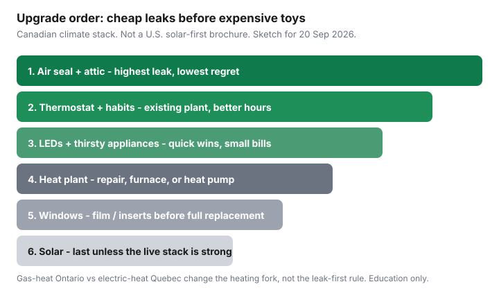

Utilities · Canada
What order should Canadian homeowners tackle energy upgrades? A practical ROI stack
Homeowners buy windows because the flyer is glossy, or solar because the neighbour’s roof photographs well, and then spend another winter with an attic hatch that whistles. Canadian heating loads are envelope loads. The order that usually pays is boring: stop the leaks, run the plant you have, swap the cheap watts, then argue about compressors and glass.
This is a climate- and fuel-aware stack, not a U.S. “solar first” post. Use attic R-values and DIY air sealing for the first rung. Federal Greener Homes and new OHPA applications are closed — see status.
Disclosure: Smart thermostats, LED kits, and heat-pump quote tools are offer types. Saving Optimizer may earn a commission if we later add partner links. We do not currently claim retailer, utility, or contractor partnerships. This is education — not a renovation bid.
Key takeaways
- Air sealing and attic insulation before equipment you can photograph. A heat pump or furnace in a sieve looks like a failure.
- Thermostats and habits on the existing system are the second rung — if you will actually keep a schedule.
- LEDs and a dying fridge are quick wins. They will not fix January.
- Heating fork: repair, replace the furnace, or heat pump — after the envelope and a live provincial rebate check.
- Windows: film and inserts before a $20,000 package. Solar last unless the live net-metering or rebate rule is unusually strong.
Air sealing and attic insulation before sexy equipment
Heated air that leaves through the hatch, pot-light holes, and rim joist is energy you already paid for. NRCan’s Keeping the Heat In attic minimums run from R-45 (Zone 4) to R-80 (Zones 7a–8). Southern Ontario often sits near Zone 6 (R-60). Seal bypasses before the bags. That sequence is the insulation companion; do not skip it because a heat-pump ad arrived in the mailbox.

Thermostats and behaviour on existing systems
A boring setpoint you can live with beats a 23°C “just this week.” Modest 1–3°C setbacks if the house recovers without a two-hour blast. Keep plumbing walls above freezing. Hydro-Québec’s Energy Wise pages still say replacing dial stats with electronic ones can cut about 10% of annual heating cost — that is the dumb upgrade. A smart stat on top of a schedule you already keep is a smaller delta; run the break-even worksheet.
Ontario Peak Perks ($75 / $20, central AC) is a summer demand-response credit, not a heating renovation. Québec Flex D / Hilo automation is a winter peak story. Neither replaces weatherstripping.
Lighting and appliances as quick wins
If a recessed can is still a halogen, you are heating the attic on purpose. LEDs are cheap and done in an afternoon. A 15-year-old fridge that runs all winter is a quieter win than a feature-wall of smart bulbs. Check for a live appliance rebate on the same provincial page you use for heat pumps — they come and go. Do not finance a new range to “save energy” while the attic hatch is a picture frame.
Heating system forks: repair, replace furnace, or heat pump
After the envelope can hold heat:
- Repair if the heat exchanger is sound, the filter is the problem, and you will sell within a couple of winters.
- Like-for-like furnace if you need heat this week, the panel is full, or the operating-cost worksheet does not beat realistic winter COP. Closed federal stacks make this more common than 2023 blogs admit.
- Heat pump or hybrid if the A/C is dying anyway, the panel can take it (or you can fund 200 A), and a live provincial rebate still exists the week you sign. Cold-climate spec sheets, not slogans.
Convert fuels first in gas vs electric heat. Baseboard houses should read the baseboard playbook before they buy a ductless head for every bedroom.
Windows: film and inserts vs full replacement economics
Failed sealed units (fogged glass) and rotting sashes are a building problem. Drafty but intact windows are usually an air-sealing problem: weatherstrip, lock the sash, interior film, or acrylic inserts. A full replacement package is comfort, street appeal, and sometimes resale — it is rarely the best $/kWh on a Canadian house that still has an R-20 attic. If a program pays per rough opening (some Ontario assessment streams have listed about $100 per opening), run the math; do not let the rebate invent the project.
Solar last unless rebates and net metering are uniquely strong
Panels on a leaky roof are how you export kWh at mid-peak and import them again through the hatch at 6 p.m. Read net metering basics and, for Ontario bills, the bill-first framework. Solar jumps the queue only when:
- The roof is due for shingles anyway (do the roof first, then the rack).
- Your utility’s credit rule plus a live rebate (for example Ontario HRSP solar $1,000/kW up to $5,000, 50% cap — verify, and ask whether it bars net metering) still works after delivery charges stay on the bill.
- You already did the envelope and are not counting on a dead Greener Homes line.
Sample stacks: gas-heat Ontario vs electric-heat Québec
| Rung | Gas-heat Ontario suburb | Electric-heat Québec (Rate D) |
|---|---|---|
| 1 | Attic hatch, bypasses, R-60 if you are in Zone 6 | Same — plus basement rim joist if you can see it |
| 2 | Program the furnace stat; skip Peak Perks unless you have central AC | Electronic / line-voltage stats; consider Flex D only if you will shed peaks |
| 3 | LEDs, dying second fridge | Same — second-tier 11.142 ¢ kWh (1 Apr 2026) makes always-on loads bite |
| 4 | Hybrid when the A/C dies; furnace-only if the panel or cash cannot stretch | Cold-climate heat pump after LogisVert / Chauffez vert check |
| 5–6 | Inserts, then solar only with a bill-first worksheet | Same — Rate D is cheap enough that solar payback is longer unless you have a grant |
An EnerGuide visit (what it includes) is how two contractors stop arguing from different iPads. Pay the $600–$1,000 pair if the contract is large. Do not pay it to chase a closed federal grant.
Sources & date stamps
- NRCan, Keeping the Heat In attic R-values and air-seal-first guidance (used 20 Sep 2026).
- Hydro-Québec Energy Wise — electronic vs dial thermostats (~10%); Rate D 1 Apr 2026 tiers in the Rate D companion.
- OEB RPP prices 1 Nov 2025–31 Oct 2026; Save on Energy Peak Perks $75 / $20 (20 Sep 2026).
- NRCan Greener Homes / OHPA closure pages; HRSP solar amounts cited as a verify-live example.
Frequently asked questions
Should I replace windows before insulating the attic?
Almost never for bill math. Air-seal and hit the NRCan attic R-value first. Film or interior inserts can wait; a full window package is a comfort and resale project unless the units are failed.
When does a heat pump jump the queue?
When the existing plant is dead or unsafe, you have a live provincial stack, the panel can take it, and the envelope is no longer a barn. Federal Greener Homes and new OHPA applications are closed.
Is solar ever first?
Only if a live rebate plus your utility’s credit rule is unusually strong and the roof is already mid-life-replacement. Most Ontario and Québec houses still save more by leaking less.
Does a smart thermostat beat weatherstripping?
No. A schedule on a sieve still heats the yard. Do the attic hatch and door sweeps first, then the stat. See the thermostat companion for fuel-type break-even.
How do Ontario gas and Québec electric stacks differ?
The leak-first rule is the same. Ontario gas houses often stay hybrid or furnace-plus-envelope. Québec Rate D houses more often win with a real heat pump after the attic is sealed.